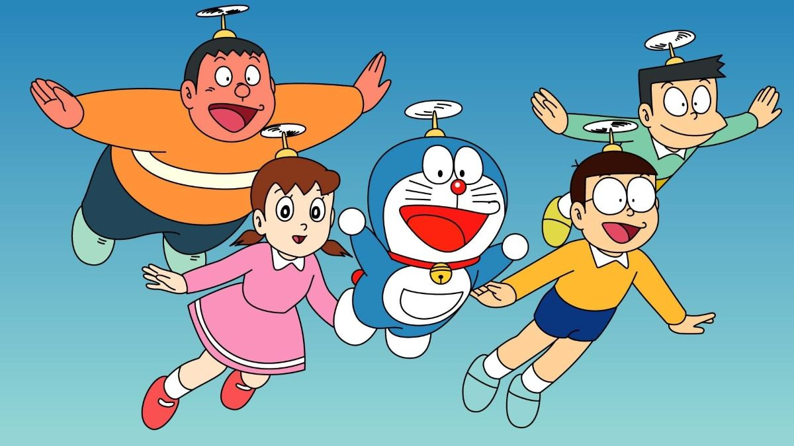
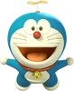
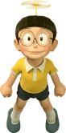
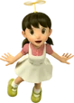
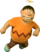
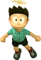

MS-903 "Doraemon" or simply Doraemon (ドラえもん Doraemon) is the titular deuteragonist of the Doraemon franchise. After being manufactured in a Factory in the 22nd century, he is sent back in time by his owner, Sewashi Nobi, to help out his great-great-grandfather, Nobita Nobi, in becoming a successful person with a bright future. Doraemon was voiced by Kosei Tomita in the early 1973 episodes, and Masako Nozawa in the later 1973 episodes, Nobuyo Oyama in the 1979 anime, and Wasabi Mizuta in the 2005 anime.
| Character | Date Of Birth | Residence | Skills | Information | |
|---|---|---|---|---|---|
| Doreamon |  | September 3, 2112 (Virgo) | Nobis' Residence | 4D Pocket, Rocky Head, Rubber Hand, Super Strength, Super Durability, Super Speed, Super Smell, Night Vision, Soundproof Feet. | #MS-903 "Doraemon" or simply Doraemon is the main, titular character of all Doraemon media (including, but not limited to the original manga, the anime (1973, 1979, and 2005), video games, and movies). |
| Nobita Nobi |  | August 7 (Leo) | Nobis' Residence | Sleep instantly , Creativity , Cat's Cradle , Marksmanship , Kendama , Video Games , Reading , Pottery , Origamis , Checkers/Chess , Catching food in the air Exemplary accuracy , Quick reloading in gunning , Business , Leadership , Uncanny luck | Nobita Nobi (野比 のび太 Nobi Nobita), known simply as Noby in the English dub, is the protagonist of the Doraemon series. |
| Shizuka_Minamoto |  | May 8 (Taurus) | Minamotos' Residence | Studying , Piano , "Horrendous" Violin Playing , Cooking Singing , Baking | Shizuka Minamoto (源 静香 Minamoto Shizuka), or Sue in the English dub, is one of the main characters in the series, being the main female character. In the future after marrying Nobita, she is also known as Shizuka Nobi or Mrs. Nobi. |
| Takeshi Gouda Gian , Big G |
 | June 15 (Gemini) | Godas' Residence | Strength , "Horrendous" singing , Martial Arts Bullying , Sports | Takeshi Gouda (剛田 武 , Takeshi Gouda), more commonly known by his nickname Gian ( ジャイアン , translation of the English term Giant), is one of the main characters in the Doraemon series. In the English dub, he is known as Big G.. |
| Suneo Honekawa |  | February 29 (Pisces) | Honekawas' Residence | Science and technology , Drawing , Video Games , Taunting People , Speaking different languages , Showing of. | Suneo Honekawa (骨川スネ夫 Honekawa Suneo) (also known as Sneech in the English episodes) is one of the main characters in the Doraemon series.. |